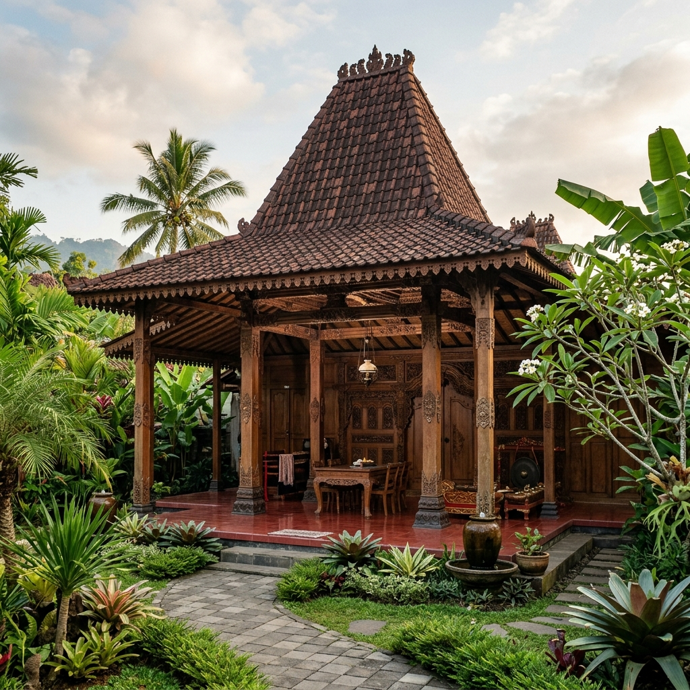
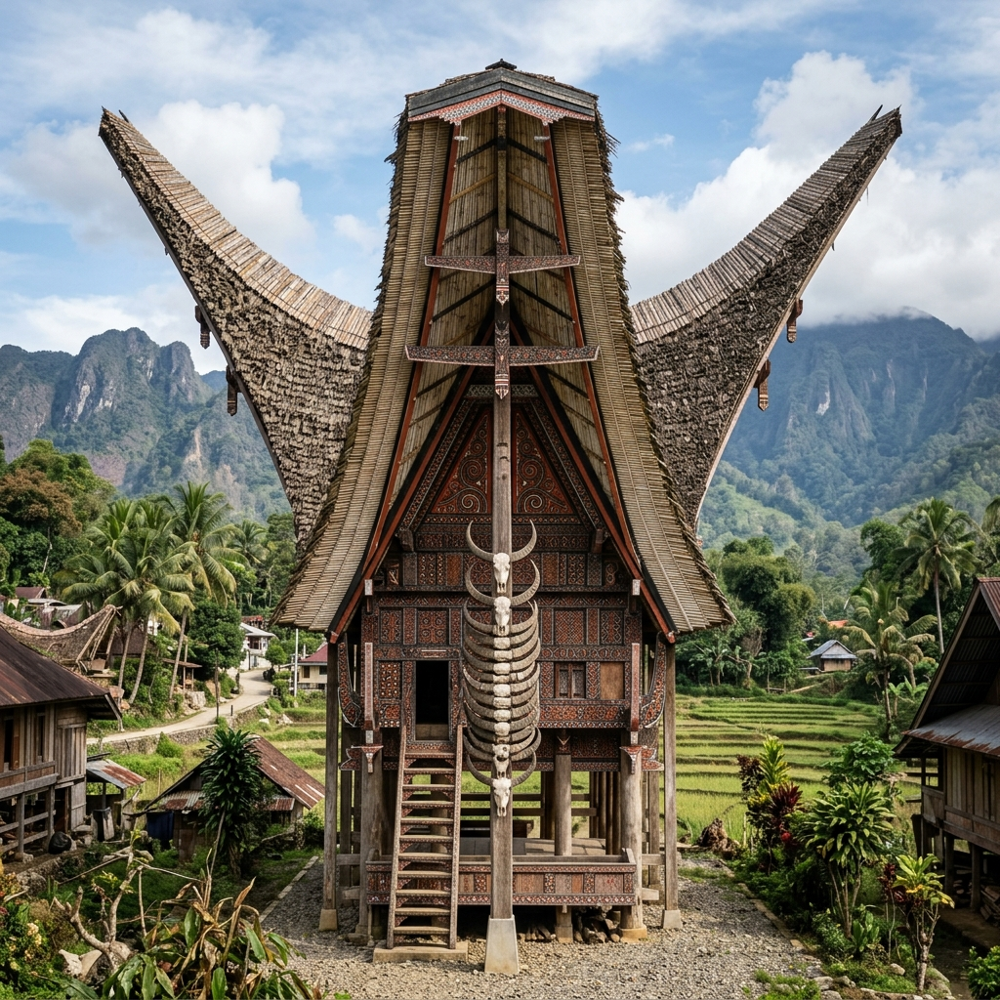
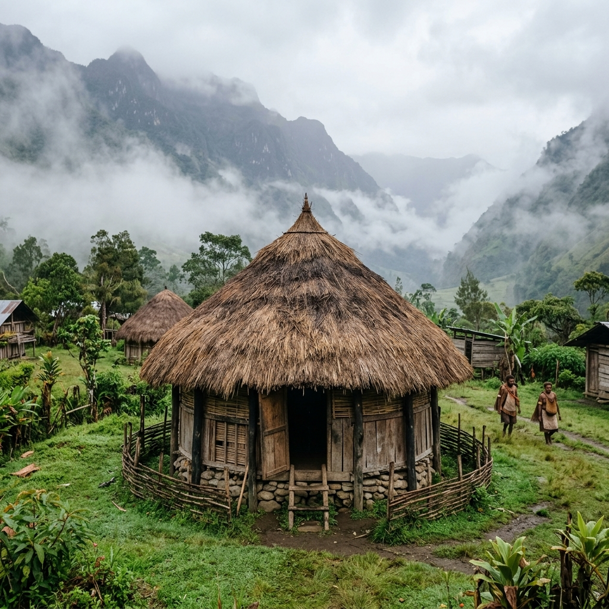
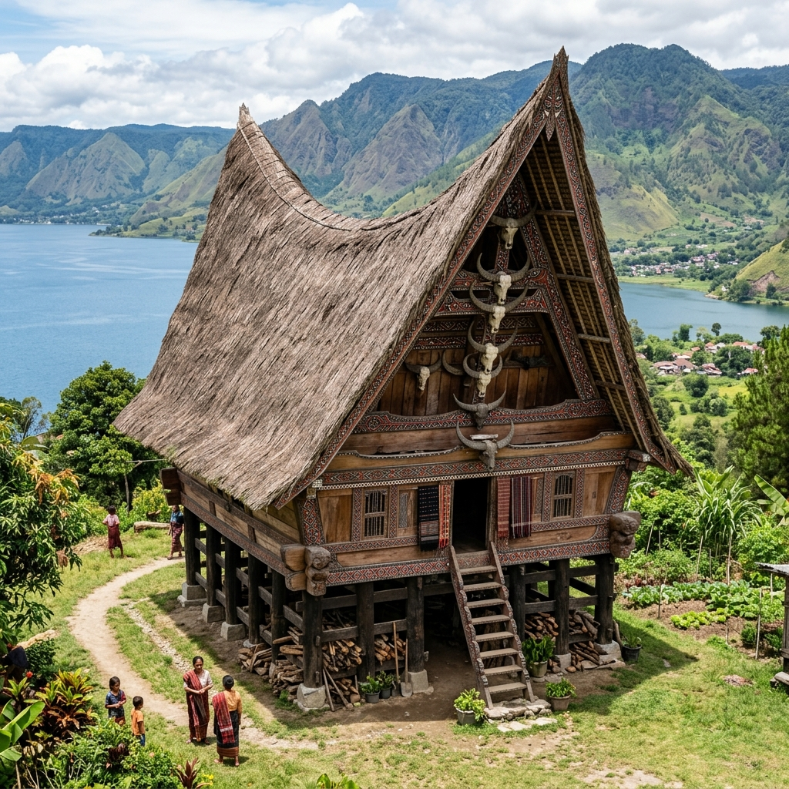

5 rumah adat di Indonesia menjadi cerminan kekayaan budaya Nusantara yang diwariskan secara turun-temurun. Dikenal sebagai negara dengan ratusan suku dan tradisi, Indonesia memiliki beragam bentuk rumah adat yang tidak hanya berfungsi sebagai tempat tinggal, tetapi juga mengandung nilai filosofis, sosial, hingga spiritual bagi masyarakatnya.
Biasanya, rumah adat dibangun dengan mempertimbangkan kondisi alam, kepercayaan lokal, serta struktur sosial masyarakat setempat. Mulai dari bentuk atap, arah bangunan, hingga bahan yang digunakan, semuanya memiliki makna tersendiri.
Hingga kini, rumah adat masih dijaga keberadaannya sebagai identitas budaya dan daya tarik wisata. Artikel ini akan mengajak kamu mengenal 5 rumah adat di Indonesia yang paling populer, lengkap dengan ciri khas dan makna budaya di baliknya. Yuk, telusuri artikelnya!
Apa Itu Rumah Adat?
Rumah adat adalah bangunan tradisional khas suatu daerah yang dibangun berdasarkan adat, budaya, dan kepercayaan masyarakat setempat. Rumah ini biasanya diwariskan secara turun-temurun dan menjadi simbol identitas suatu suku atau daerah.
Setiap elemen rumah adat, mulai dari bentuk atap, jumlah tiang, hingga arah bangunan, memiliki arti tertentu. Selain digunakan sebagai tempat tinggal, rumah adat juga sering difungsikan sebagai tempat musyawarah, upacara adat, hingga pusat kegiatan sosial masyarakat.
1. Rumah Gadang – Sumatra Barat
Rumah Gadang dengan atap gonjong menyerupai tanduk kerbau
Rumah Gadang merupakan rumah adat suku Minangkabau yang berasal dari Sumatra Barat. Ciri khas dari rumah ini adalah bentuk atapnya yang melengkung tajam menyerupai tanduk kerbau, yang dikenal dengan sebutan gonjong. Atapnya yang menyerupai tanduk kerbau melambangkan kemenangan, kekuatan, dan kebijaksanaan.
Rumah ini juga mencerminkan sistem kekerabatan matrilineal, di mana garis keturunan ditarik dari pihak ibu. Rumah Gadang biasanya dihuni oleh keluarga besar dan terdiri dari beberapa kamar yang diperuntukkan bagi perempuan dalam keluarga. Sementara itu, ruang tengah digunakan untuk kegiatan bersama dan upacara adat.
2. Rumah Joglo – Jawa Tengah dan Yogyakarta

Rumah Joglo dengan atap tinggi bertingkat dan saka guru
Rumah Joglo adalah rumah adat khas masyarakat Jawa, khususnya di wilayah Jawa Tengah dan Yogyakarta. Ciri utama dari Rumah Joglo terletak pada bentuk atapnya yang tinggi dan bertingkat, yang kemudian ditopang oleh empat tiang utama yang disebut saka guru.
Struktur Rumah Joglo mencerminkan filosofi kehidupan masyarakat Jawa yang menjunjung tinggi nilai keselarasan, kesopanan, dan hierarki sosial. Dahulu, rumah ini hanya dimiliki oleh kalangan bangsawan atau orang terpandang. Di dalam Rumah Joglo, pembagian ruang juga memiliki makna tersendiri, mulai dari pendopo sebagai ruang menerima tamu hingga bagian dalam rumah yang bersifat lebih privat.
3. Rumah Tongkonan – Sulawesi Selatan

Rumah Tongkonan dengan atap melengkung menyerupai perahu
Rumah Tongkonan merupakan rumah adat suku Toraja yang berasal dari Sulawesi Selatan. Rumah ini memiliki bentuk yang sangat khas dengan atap melengkung menyerupai perahu atau tanduk kerbau, serta dihiasi ukiran berwarna merah, hitam, dan kuning.
Rumah Tongkonan bukan hanya sekadar tempat tinggal, tetapi juga pusat kehidupan sosial dan adat masyarakat Toraja. Terdapat makna spiritual dalam pembangunan Rumah Tongkonan. Rumah adat ini selalu menghadap ke utara, karena dipercaya sebagai arah asal leluhur.
4. Rumah Honai – Papua

Rumah Honai dengan atap kerucut khas Papua
Rumah Honai adalah rumah adat masyarakat Papua, khususnya suku Dani yang tinggal di daerah pegunungan. Bentuk rumah ini tergolong unik karena berukuran kecil, bundar, dan memiliki atap kerucut dari jerami atau ilalang. Dirancang khusus untuk menyesuaikan dengan kondisi alam Papua yang dingin.
Rumah Honai dibangun dengan dinding yang tebal dan pintu yang rendah untuk menjaga suhu di dalam rumah tetap hangat. Biasanya, Rumah Honai digunakan sebagai tempat tinggal laki-laki, sementara perempuan memiliki rumah terpisah. Kesederhanaan Rumah Honai mencerminkan hubungan harmonis masyarakat Papua dengan alam sekitarnya.
5. Rumah Bolon – Sumatra Utara

Rumah Bolon dengan ukiran khas Batak yang penuh makna simbolis
Rumah Bolon adalah rumah adat suku Batak yang berasal dari Sumatra Utara. Rumah ini berbentuk panggung dengan atap besar dan menjulang, serta dihiasi ukiran khas Batak yang penuh makna simbolis. Rumah Bolon biasanya dihuni oleh beberapa keluarga dan menjadi pusat aktivitas adat.
Dalam budaya Batak, rumah ini melambangkan kebersamaan, kekuatan, dan hubungan antar anggota keluarga. Selain sebagai tempat tinggal, Rumah Bolon juga sering digunakan untuk upacara adat dan pertemuan penting. Hingga kini, rumah adat Batak masih dilestarikan sebagai bagian dari identitas budaya Sumatra Utara.
Mengapa Rumah Adat di Indonesia Penting untuk Dilestarikan?
Keberadaan rumah adat tidak hanya penting sebagai peninggalan sejarah, tetapi juga sebagai identitas budaya bangsa. Rumah adat mengajarkan nilai-nilai kearifan lokal, seperti gotong royong, hubungan dengan alam, serta tata kehidupan sosial yang harmonis.
Di tengah modernisasi, pelestarian rumah adat menjadi tantangan tersendiri. Namun, melalui edukasi, pariwisata budaya, dan dokumentasi yang baik, rumah adat tetap bisa dikenal dan diapresiasi oleh generasi muda.
Tips Mengunjungi Rumah Adat sebagai Wisata Budaya
Jika kamu tertarik mengunjungi rumah adat di Indonesia, ada beberapa hal yang perlu diperhatikan:
- Hormati adat dan kebiasaan setempat
- Gunakan pakaian yang sopan
- Jangan menyentuh atau merusak bagian rumah tanpa izin
- Gunakan jasa pemandu lokal untuk pengalaman yang lebih mendalam
- Jaga kebersihan dan kelestarian lingkungan
Dengan bersikap bijak, kunjungan ke rumah adat bisa menjadi pengalaman wisata yang edukatif dan berkesan.
5 rumah adat di Indonesia menunjukkan betapa kayanya budaya dan filosofi hidup masyarakat Nusantara. Setiap rumah adat memiliki cerita, nilai, dan makna yang berbeda, namun semuanya mengajarkan pentingnya hidup selaras dengan alam dan sesama.
Dengan mengenal dan melestarikan rumah adat, kita tidak hanya menjaga bangunan fisik, tetapi juga mempertahankan identitas budaya bangsa. Rumah adat menjadi pengingat bahwa tradisi dan kearifan lokal tetap relevan dan berharga hingga kapan pun.